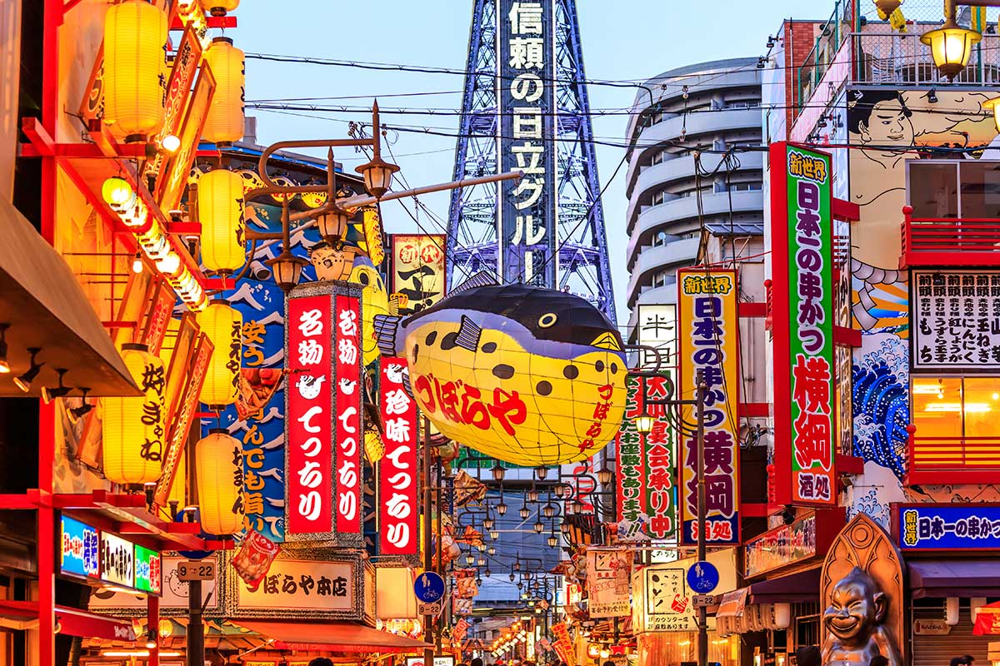
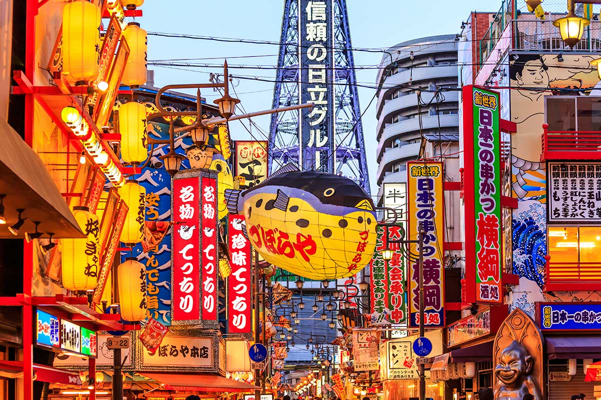

Le Japon, en forme longue l’État du Japon, en japonais Nihon ou Nippon (日本?) et Nihon-koku ou Nippon-koku (日本国?) respectivement,est un pays insulaire de l’Asie de l’Est, situé entre l’océan Pacifique et la mer du Japon, à l’est de la Chine, de la Corée et de la Russie, et au nord de Taïwan. Étymologiquement, les kanjis (caractères chinois) qui composent le nom du Japon signifient « pays (国, kuni) d’origine (本, hon) du Soleil (日, ni) » ; c’est ainsi que le Japon est désigné comme le « pays du soleil levant ».
 
